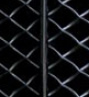

Contact us
New Scotland Yard is the principal branch of the Metropolitan Police Service. If you would like to find out more about the New Scotland Yard, fill out our general enquiries form which can be found by following this link:
https://secure.met.police.uk/enquiries/
Please note: If you need police assistance please visit www.met.police.uk or if it is an emergency dial 999.